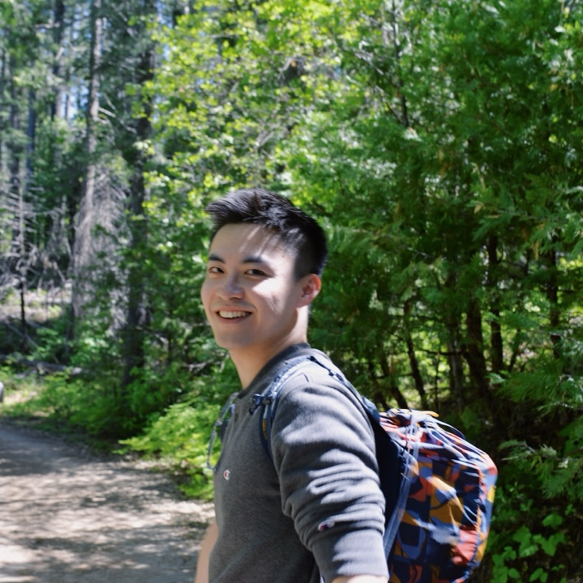

I develop statistical methods for time-to-event data. My current work uses predictions from machine learning and large language models to make survival analyses more efficient while keeping inference valid.
News
- Oct 2026Paper on time-restricted generalized R² measures for competing risks accepted in Biometrics.
- Oct 2026Released PAmeasures 2.0.0 on CRAN, an R package for evaluating survival prediction performance.
- Aug 2026Gave a contributed talk on pseudo-R² and chaired a session at JSM 2026 in Boston.
- Jul 2026Censored two-stage least squares paper published in Statistics in Biosciences.
- Mar 2026Gave a contributed talk on instrumental variable estimation for censored outcomes at ENAR 2026 in Indianapolis.
- Sep 2025Gave an invited seminar at the Department of Biostatistics, City University of Hong Kong.
Research
More on my research →Main focus
Prediction-powered inference
Survival regression that uses machine learning and large language model predictions on unlabeled data to gain efficiency, with valid inference whether or not the predictions are accurate.
Censored data methods
Valid inference under censoring and model misspecification.
Prediction evaluation
Explained variation and performance measures for survival and competing-risk prediction models.
Causal inference
Instrumental variable estimation for censored outcomes.
Clinical collaboration
Statistical analysis for COPD and oncology studies at UCLA.
Selected publications
All publications →-
Semi-supervised inference
Prediction-powered inference for right-censored survival outcomes
Cox regression that combines a small labeled sample with machine learning and LLM predictions for a larger unlabeled sample.
-
Prediction evaluation
Time-restricted generalized R² measures for assessing predictive performance in competing risks data
Measures of explained variation for prediction models with right-censored competing-risk data.
-
Causal inference
Two-stage least squares for semiparametric AFT models with right-censored data
Instrumental variable estimation for accelerated failure time models when the outcome is censored.
About
I am a Ph.D. candidate in Biostatistics at UCLA, advised by Dr. Gang Li. My main line of research is prediction-powered and semi-supervised inference: using predictions from machine learning models and large language models to make survival analyses more efficient, while keeping inference valid under censoring and model misspecification. Related interests include causal inference and the evaluation of risk prediction models with censored outcomes. I also collaborate with clinical researchers in the UCLA School of Medicine’s COPD Program.
I earned an M.S. in Biostatistics from UCLA and a B.B.A. in Financial Services with a minor in Applied Mathematics from The Hong Kong Polytechnic University. I have served as a teaching assistant for graduate biostatistics courses at UCLA and at Emory University’s Summer Institute in Statistics and Modeling in Infectious Diseases.
Outside academia, I enjoy tennis, badminton, table tennis, and photography.